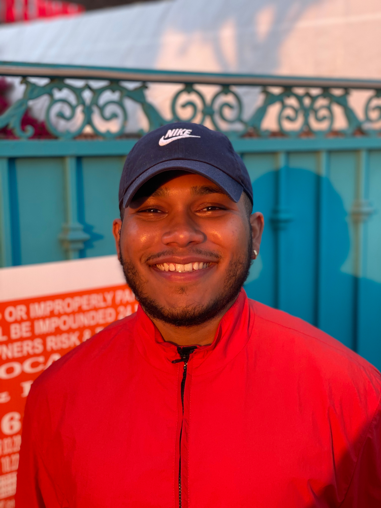

About me
Hi! My name is Kyle Payen and I am a junior studying computer science at NYU's Tandon School of Engineering. My interest in Software Engineering began when I was 17 years old after attending a technology and entrepenurship summer program at Cooper Union. That experience motivated me to study computer science in college, where I also found an interest in Mathematics and Feminists Studies. Moving forward, I want to use everything I've learned to create digital landscapes that are rooted in ethical, assessible, and inclusive design practices.
